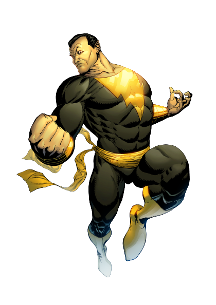

Informações do Adão Negro
Voltar
Equipes DC

Criação do Adão Negro
Adão Negro é um personagem dos quadrinhos da DC Comics, conhecido como um poderoso
anti-herói e rival do Shazam. Ele foi criado por Otto Binder e C.C. Beck,
fazendo sua primeira aparição em "The Marvel Family #1"em 1945.
O Personagem Adão Negro
Adão Negro, cujo nome verdadeiro é Teth-Adam, é um antigo campeão do Conselho dos Magos,
assim como o Shazam. Ele originalmente recebeu seus poderes dos deuses egípcios, mas foi
corrompido pelo poder e se
tornou um tirano cruel.
Adão Negro possui poderes semelhantes aos do Shazam, incluindo força sobre-humana, resistência, voo e
habilidades mágicas. No entanto, ele também é capaz de controlar a energia mágica de forma mais eficiente e
possui uma conexão com os deuses egípcios.
Ao longo das histórias, Adão Negro passou por várias transformações, tornando-se tanto um vilão temido
quanto um anti-herói complexo. Sua história é marcada por redenção, busca de poder e rivalidade com o
Shazam.
Quadrinhos Importantes do Adão Negro
O Adão Negro teve várias histórias importantes nos quadrinhos da DC Comics, explorando sua origem, suas
lutas contra heróis e suas jornadas de redenção. Aqui estão alguns dos quadrinhos mais relevantes do
personagem:
"Adão Negro: Origem" (2007):
Escrito por Geoff Johns e ilustrado por Gary Frank, esta história em seis edições explora a origem de Adão
Negro, revelando seu passado e sua transformação em um dos personagens mais poderosos e complexos da DC
Comics.
"52" (2006-2007):
Adão Negro desempenha um papel importante na série "52", onde sua busca de poder e sua rivalidade com a
Sociedade da Justiça têm grandes repercussões no universo DC.
"Shazam! The New Beginning" (1987):
Este quadrinho revitalizou o personagem do Shazam e trouxe Adão Negro como um adversário formidável,
destacando a complexidade de sua personalidade e sua luta contra o herói.
Adaptações em Outras Mídias
O Adão Negro também teve aparições em outras mídias, incluindo animações e futuramente em um filme estrelado
por Dwayne "The Rock" Johnson. Aqui estão algumas das adaptações notáveis do personagem:
Adaptações Animadas:
Adão Negro apareceu em várias animações da DC Comics, incluindo séries como "Liga da Justiça: Sem Limites" e
"Justiça Jovem", mostrando suas habilidades e rivalidade com o Shazam em histórias emocionantes.
Filme "Adão Negro" (2022):
Adão Negro terá seu próprio filme estrelado por Dwayne Johnson, explorando sua história e introduzindo-o
como um personagem importante no universo cinematográfico da DC Comics.
Habilidades do Adão Negro
Adão Negro possui um conjunto de poderes sobre-humanos, concedidos por deuses antigos. Aqui estão algumas de
suas principais habilidades:
Força Sobre-humana:
Adão Negro possui uma força incrível, permitindo-lhe levantar pesos enormes e enfrentar adversários
poderosos.
Resistência:
Ele possui uma resistência excepcional, podendo suportar danos físicos e se recuperar rapidamente de
ferimentos.
Habilidades Mágicas:
Além de sua força e resistência, Adão Negro é capaz de usar magia e controlar a energia mágica dos deuses
egípcios.
Voo:
Adão Negro pode voar através do uso de sua magia e energia.
Conclusão
Adão Negro é um personagem complexo e poderoso dos quadrinhos da DC Comics, conhecido por sua rivalidade com
o Shazam e suas habilidades sobre-humanas. Sua jornada, marcada por busca de poder, redenção e luta contra
heróis, torna-o um anti-herói intrigante e cativante. Com aparições em quadrinhos, animações e futuramente
em seu próprio filme, Adão Negro continua a fascinar os fãs com sua personalidade complexa e suas incríveis
habilidades mágicas. Sua força sobre-humana, resistência, voo e controle da energia mágica o tornam uma
ameaça formidável e um personagem icônico no universo da DC Comics.